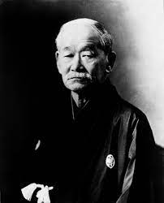

El judo es un deporte conocido mundialmente por ser unos de los primeros artes marciales en incluirse en los juegos olimpicos. Su fundador fué Jigoro kano que a pesar de su baja estatura logro crear un arte marcial capaz de derribar a rivales mas grandes. Este mas tarde se considerará como deporte y no como arte marcial.
|  |
| Jigoro Kano |
En Castilla y León uno de los clubes mas importantes es el doryoku en Salamanca gracias a su gran número de participantes que superan los 1000 judokas. El club cuenta con un campeonato técnico propio en el cual también pueden participar otros clubes de la comunidad autonoma. Su mas cota se llama Doryneko que es un zorro azul con un judogui y asiste al campeonato y campamentos.
Además tiene su propia página web dedicada a clases de judo y fue creada en la cuarentena.
La vestimenta que utilizan los judokas se llama judogui y esta compuesta de 3 partes diferentes